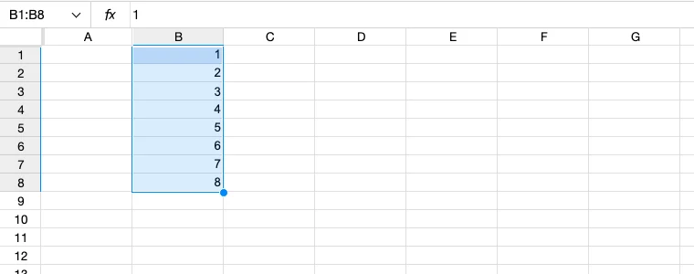

Auswählen, kopieren, ausfüllen
Auswählen
| Aktion | Auswahl |
|---|---|
| Klick | eine Zelle |
| Ziehen | ein Bereich |
| Klick, dann Umschalt und Klick | der Bereich dazwischen |
| Umschalt und Pfeiltaste | erweitert den Bereich |
| Strg und Klick oder Ziehen | ein weiterer Bereich |
| Klick auf einen Buchstaben, eine Nummer | eine Spalte, eine Zeile |
| Ziehen über Buchstaben, Nummern | mehrere Spalten, mehrere Zeilen |
| Strg A | das ganze Blatt |
| Namenfeld, Pfeil | ein benannter Bereich |
Die Adresse der Auswahl steht im Namenfeld links von der Bearbeitungsleiste.
Kopieren, ausschneiden, einfügen
Strg C, Strg X, Strg V oder Kopieren und Einfügen des Rechtsklicks.
- Einfügen des Rechtsklicks fügt die Werte ohne die Formeln ein; Strg V fügt die Formeln ein.
- Eine eingefügte Formel passt sich ihrem neuen Ort an:
=B2eine Zeile tiefer kopiert wird=B3. Das Zeichen$hält eine Zeile oder Spalte fest (Bezüge). - Eine ausgeschnittene Formel behält ihre Bezüge.
- Eine aus Excel, Numbers, einer Webseite oder einem tabulatorgetrennten Text kopierte Tabelle wird Zelle für Zelle eingefügt; Dezimalzahlen und Listen werden wie beim Tippen erkannt.
- Mehrere Bereiche können nicht zugleich ausgeschnitten oder eingefügt werden.
Verschieben
Den Rand der Auswahl ziehen: die Zellen werden samt Formatierung verschoben.
Ausfüllen
Der blaue Anfasser unten rechts an der Auswahl wird nach unten, oben, links oder rechts gezogen.
| Ausgangszellen | Der Anfasser ergibt |
|---|---|
| eine Formel | die Formel mit verschobenen Bezügen |
| zwei Zahlen, 1 und 2 | die Reihe: 3, 4, 5… |
| eine einzelne Zahl, ein Text oder ein Datum | denselben Wert |
| zwei Daten | die folgenden Daten im selben Abstand |

Ohne Maus oder für einen großen Bereich:
| Befehl | Wirkung |
|---|---|
| Bearbeiten › Nach unten ausfüllen, Strg D | die erste Zeile des ausgewählten Bereichs wird in die folgenden kopiert |
| Bearbeiten › Nach rechts ausfüllen, Strg R | die erste Spalte wird in die folgenden kopiert |
Ist nur eine Zeile ausgewählt, kopiert Strg D die darüberliegende hinein; ist nur eine Spalte ausgewählt, kopiert Strg R die linke. Diese Befehle kopieren immer, ohne Reihe, mit Formaten, Rahmen, Kontrollkästchen und Drop-down-Listen.
Für eine Formel in einer ganzen Spalte: sie oben tippen, von dieser Zelle bis zur letzten auswählen, Strg D.